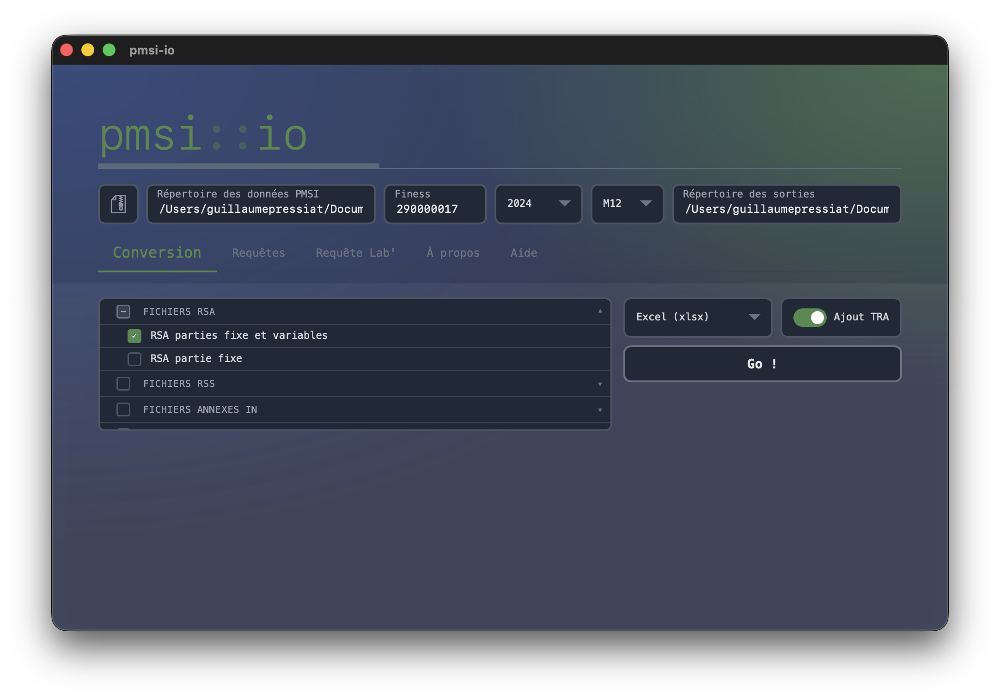
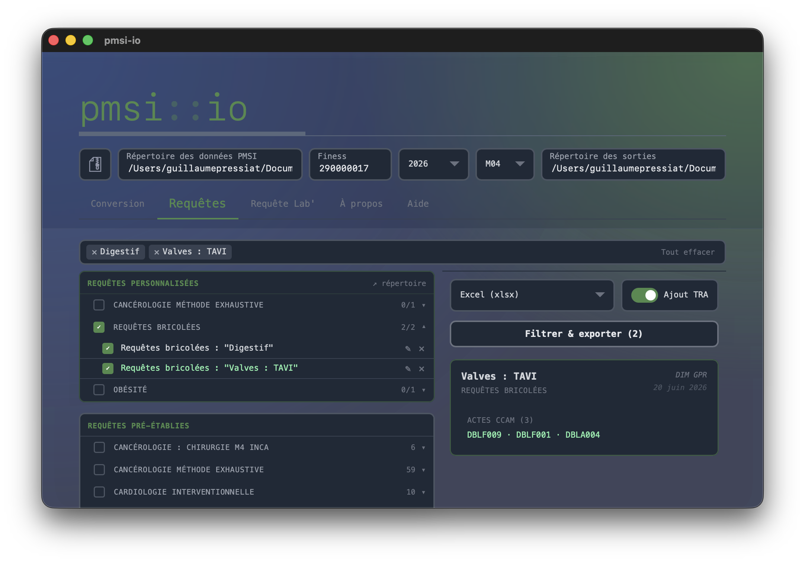
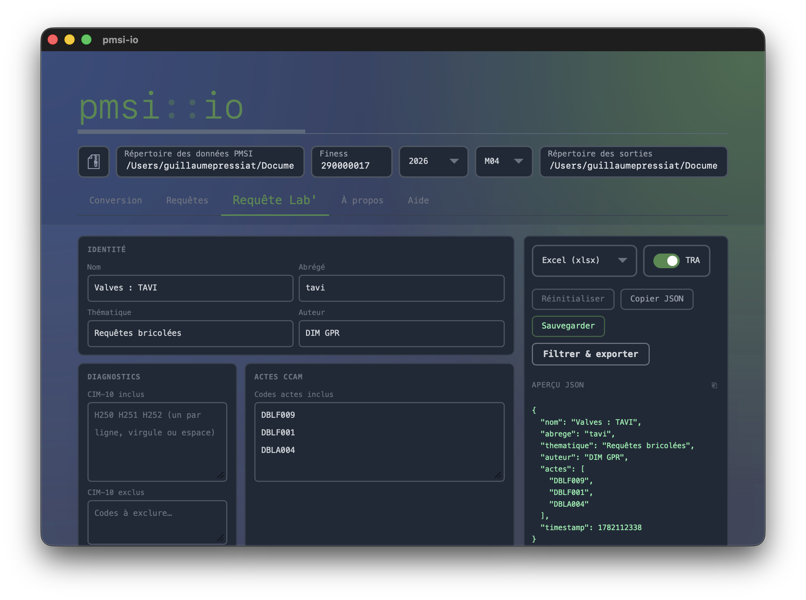
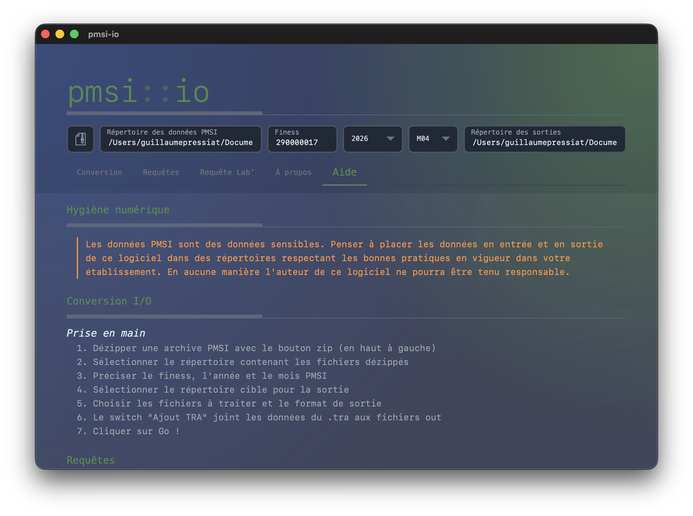

Sélectionnez les fichiers PMSI à exporter, choisissez le format (csv, xlsx, parquet…) et lancez la conversion en un clic.

Exécutez des requêtes pré-établies ou personnalisées sur vos RSA, filtrez par thématique et exportez les résultats.

Construisez vos propres requêtes (GHM, diagnostics, actes CCAM, âge, poids…), sauvegardez-les et partagez-les en JSON.

Documentation intégrée : hygiène numérique, prise en main pas à pas, requêtes avancées.